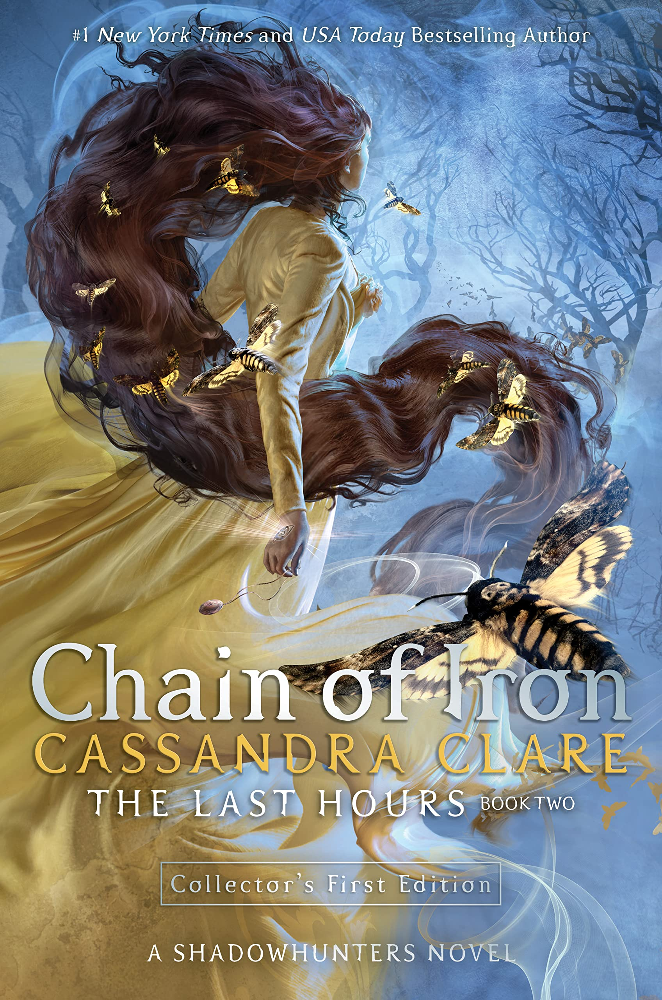
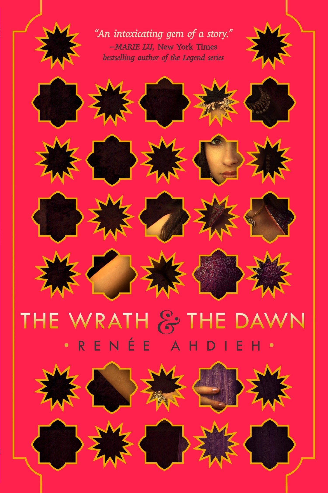

hello, world_
Olá! Meu nome é Jéssyca Ferreira, tenho 18 anos e sou aluna do primeiro período do curso de ciência da computação da UFPE. Esse site foi criado para a atividade da cadeira IF668 - INTRODUÇÃO À COMPUTAÇÃO e ele visa mostrar um pouco de mim, e do meu universo.
Sempre me interessei pelo curso, apesar de ter apenas um entendimento mínimo, quase inexistente, da área. Até então, a experiência do CIn e de CC têm sido muito bem-vindas, muito do que eu esperava quando eu decidi entrar aqui. Não há muito o que falar além do fato de que estou adorando o curso, e que espero aprender mais e mais com o passar do tempo.
No momento, curso as seguintes cadeiras:
Cálculo I
Matemática Discreta
Introdução à Computação
Álgebra Linear e Vetorial
Introdução à Programação
Tenho muitos hobbies (muitos mesmo), embora não seja necessariamente boa em todos eles. Mas como a principal qualidade de um hobby é entreter, acredito que tudo bem. Para citar alguns: eu adoro fazer crochê (que, fun fact, é bem diferente tricô), jogar xadrez, rpg e, o hobby que mantenho a mais tempo, ler!
Algumas das minhas últimas leituras foram:


Por pura sorte, eles também acabaram se tornando meus livros favoritos do ano, que eu recomendo para todo mundo.